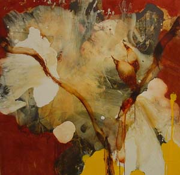

|
DAVID
GEISER
by Robert C Morgan Kips Gallery January 3 - February 2, 2008 |
|||
|
From
The Brooklyn Rail, March 2008

It would seem that installation art, as it is understood today, is a misnomer. The museological use of the term refers to the way an exhibition is mounted, how it is presented, and how it determines (to a large extent) the relationships between the paintings within the gallery space. David Geiser’s paintings suggest the kind of urgency that used to occupy artists before the advent of “installation art.” Geiser’s recent exhibition at Kips Gallery—one of the smaller, more intimate spaces in West Chelsea—consists of a sequence of enlarged microorganisms and painterly floral forms on separate panels. Rather than incorporating the overall space, Geiser is interested in what happens within the paintings themselves: layers of pigment that accrue during the painting process, generating a mixture of muted earth colors and textures that relate directly to the vitality of the brushwork.
Geiser’s biography as a painter is unusual. In 1969, after attending the University of Vermont, he decided to drive his VW bus to San Francsisco—where the action was happening. Once settled in the Mission District, he met Grey Arlington, founder of the San Francisco Comic Book Company. Within months Geiser became part of the underground comics scene, which included designing posters for rock concerts at the Fillmore. His mentors were R. Crumb, S. Clay Wilson, and the poet Jack Micheline. Over the next six years, he produced a chain of countercultural comic books, culminating with the publication of Pain (1975-76) through the Bagginer Press in Paris. At the peak of his reputation as a comic book artist, Geiser’s career took a different turn. He married, had a son, and focused almost entirely on painting. Then, after several cross-country trips to New York, he finally decided to settle here in 1981, taking odd jobs with Al Goldstein’s Screw magazine and occasional op-ed gigs with The New York Times.
In a ramshackle, live-in New York studio, Geiser became obsessed with painting, literally working day and night, searching for a point of view less involved with the trends of the eighties than with a vision of reality that would lead him in a new direction. He was interested in finding what he called “the gritty substance.” Finally, he discovered it. His forms turned toward organic specimens and fossils, but always from the vantage point of a personal abstract vocabulary. In his recent exhibition, we see intense ultramarine blue with gold leaf beside brilliant yellows over crusty earth tones, built up layer upon layer. Geiser does not date his paintings because he does not remember exactly when they started. He only knows that they ended sometime in the past year, and even that is conditional. In each case, the paintings are highly textural and densely packed with pigment and natural substances, including various species of tree bark and fungi. For Geiser, wild mushrooms are simply another collage element projecting from these free-form shapes.
These mystifyingly unrecognized paintings occupy a place totally within the realm of eccentric painting—not in the outsider sense, but in the way they congeal rationally in relation to their materials. They belong to no school or movement. They are difficult (but not impossible) to locate in the art market. As a painter in his own world (where such painters belong), Geiser is less interested in trends than in imbuing painting with pre-linguistic memory, in how far these inscrutable panels of fossilized pigment can carry his ideas into the future—a future that he wants to steer in the direction of the tactile moment before it is lost to the lust for fashion, stardom and money that currently rules the world of contemporary art.
|
|||
| |Home| | |||